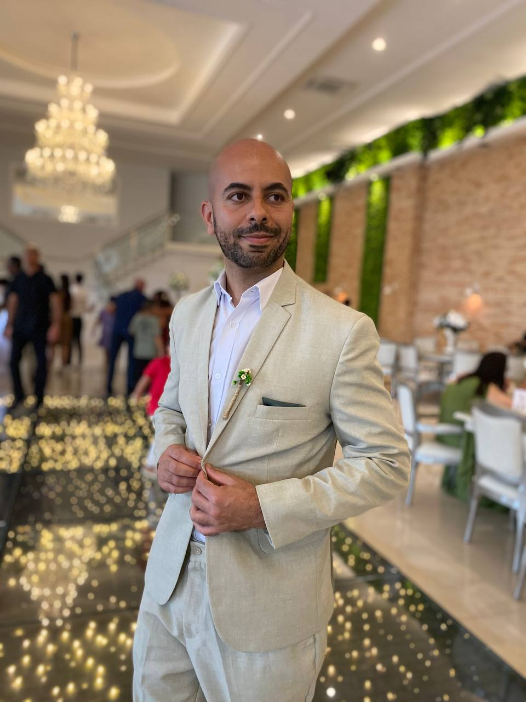
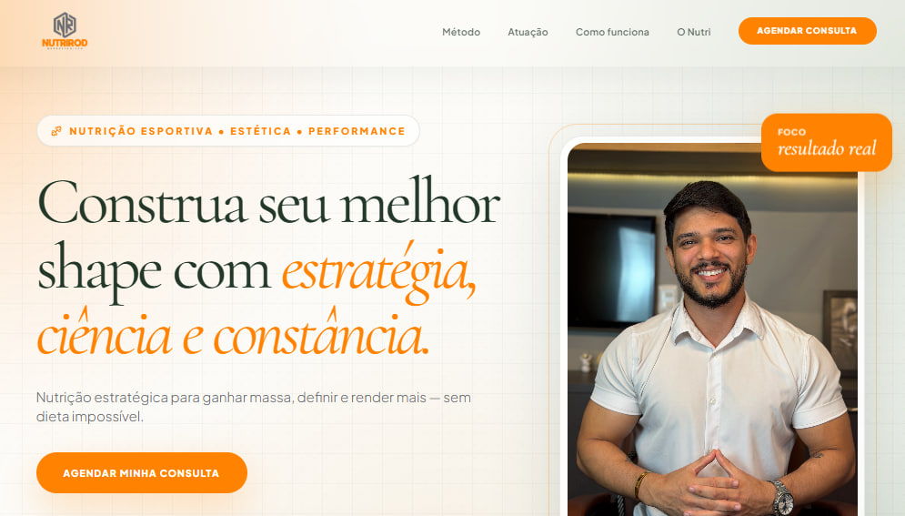
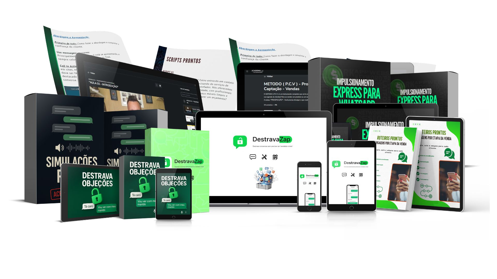
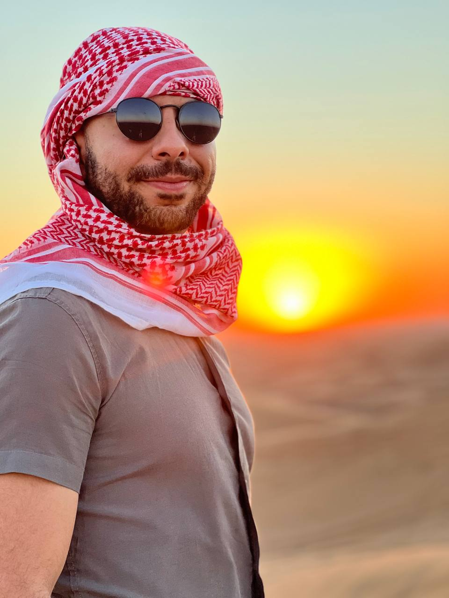
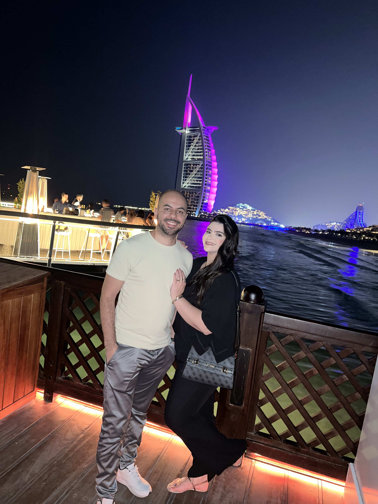
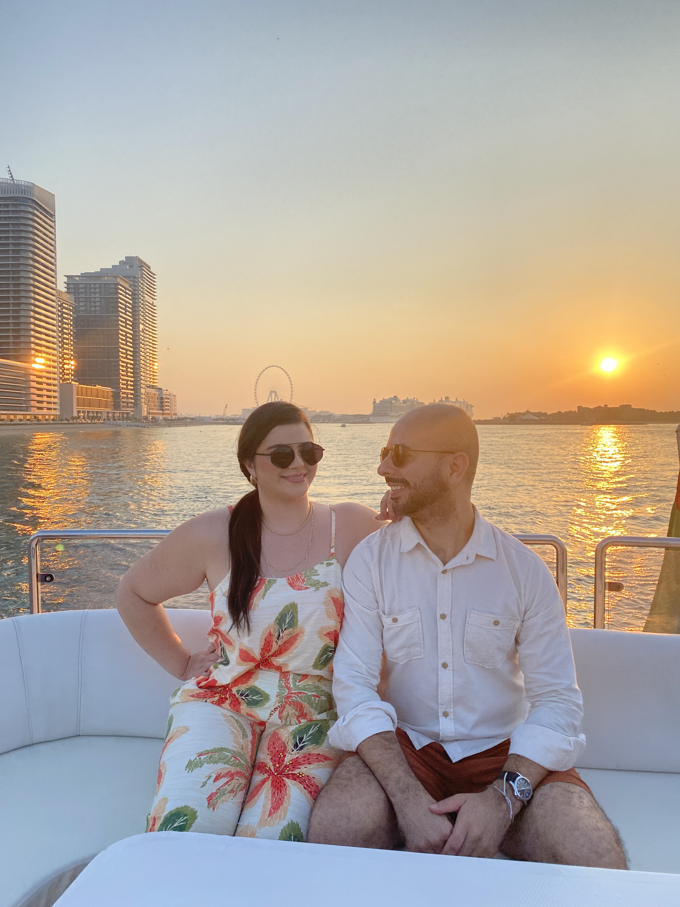
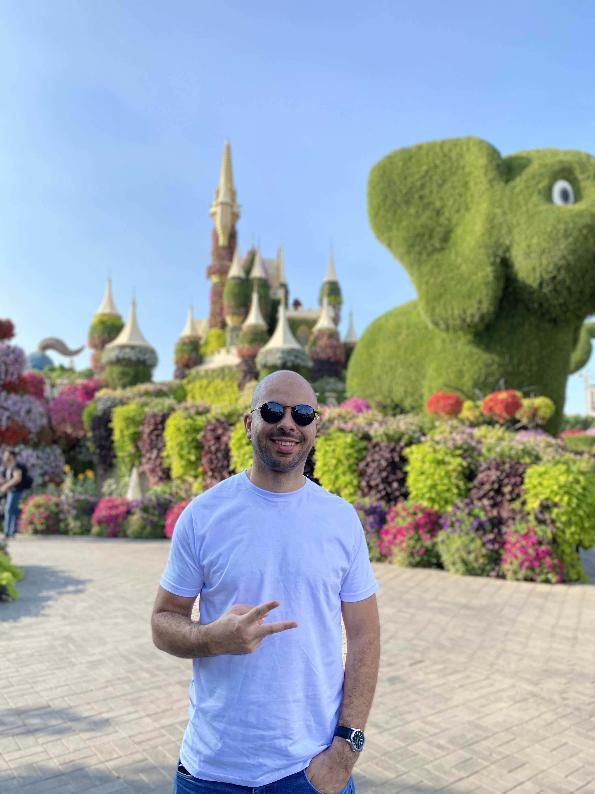

Meta Ads, copy, páginas e tracking na mesma pessoa: menos retrabalho, campanha no ar mais rápido e decisão baseada em CPA, não em achismo.
+5 anos em Meta Ads e Direct Response, no Brasil e nos EUA, depois de 4 anos em vendas ativas no mercado financeiro. Já operei do anúncio ao checkout em emagrecimento, nutra, renda extra e negócios locais.

Prints e dashboards de cada case disponíveis sob solicitação.
Especialista em Meta Ads e funis, capaz de assumir qualquer etapa, do anúncio até a venda.
Desenvolvi habilidades que vão além de desenhar uma página: construo tudo do zero, da arte e da identidade visual até a landing page, os mockups e o design do produto.
Alguns trabalhos que fiz 100% por conta própria:

Página 100% em HTML, leve e pensada para converter no celular.
Infoproduto sobre lipedema, com identidade visual e página criadas do zero.
Infoproduto para higienizadores de estofados.

Infoproduto de vendas pelo WhatsApp para prestadores de serviços.
Infoproduto de emagrecimento para mulheres acima de 40 anos.
Infoproduto de emagrecimento para mulheres acima de 30 anos.
Infoproduto de receitas para mulheres acima de 40 anos.
Infoproduto para quem quer começar a trabalhar como higienizador de estofados.
O que me deixa autônomo: crio, edito e meço sem depender de ninguém.
Criativos, mockups e tratamento de imagem
Peças rápidas e variações de criativo
Edição de vídeo para anúncios e VSL
E-mail e automações de nutrição
Básico para copy, roteiro e ganho de tempo
Leitura de tráfego e comportamento
Persuasão e vendas
As Armas da Persuasão (Cialdini) · Objeções (Jeb Blount) · Manual de Persuasão do FBI (Jack Schafer) · Jogo do Poder (Henrik Fexeus) · Como Convencer Alguém em 90 Segundos (Boothman) · Gatilhos Mentais (Gustavo Ferreira)
Copy e marketing
Confissões de um Publicitário (Ogilvy) · Transformando Palavras em Dinheiro (Ícaro de Carvalho) · Clique Aqui (Natanael Oliveira) · Marketing 4.0 (Kotler) · Nocaute (Gary Vee) · A Lógica do Consumo (Lindstrom)
Crescimento e negócios
Hacking Growth (Sean Ellis) · Tração (Weinberg e Mares) · Scrum (Jeff Sutherland) · Salomão, o Homem Mais Rico que Já Existiu
Liderança (John Maxwell)
17 Princípios do Trabalho em Equipe · 21 Qualidades Indispensáveis de um Líder · Liderando para o Sucesso · Todos se Comunicam, Poucos se Conectam · Até Onde Você Vai · Você Pode Realizar seu Sonho · O Sucesso Está em Você · Você Faz a Diferença · Você Nasceu para Liderar
Produtividade e hábitos
Essencialismo (McKeown) · Micro-hábitos (BJ Fogg) · Comece pelo Mais Difícil (Brian Tracy) · A Tríade do Tempo (Christian Barbosa) · Ultra Aprendizado (Scott Young) · Pare de Tentar, Comece a Fazer (Júlia Kristina)
Mentalidade
Poder sem Limites e Passos de Gigante (Tony Robbins) · Quem Pensa Enriquece e As 16 Leis do Sucesso (Napoleon Hill) · 12 Regras para a Vida (Jordan Peterson) · O Poder do Subconsciente (Joseph Murphy) · Psicocibernética (Maxwell Maltz) · Davi e Golias (Gladwell) · O Jeito Harvard de Ser Feliz (Shawn Achor) · O Óbvio que Ignoramos (Jacob Petry) · Nascido para o Sucesso (Colin Turner) · Seja Foda (Caio Carneiro) · Sobre a Escrita (Stephen King)
Um pouco sobre mim e o meu porquê.




Atuo no mercado digital há cerca de 5 anos, com foco em tráfego pago, geração de leads e estruturação de funis de vendas para infoprodutos e negócios locais. Antes disso, passei 4 anos fazendo a expansão no Brasil de uma empresa americana do mercado financeiro (forex). Lá, colocava a mão na massa na prospecção ativa de vendas e também ministrava treinamentos para a base de clientes e equipes no país.
Foi nessa escola prática que entendi a fundo sobre abordagem, geração de oportunidades e o que realmente faz alguém comprar. Depois disso, fui convidado pelo meu líder para ser sócio minoritário de uma nova operação de educação e mercado financeiro. Fiquei à frente da estratégia de marketing, tráfego, infraestrutura e funis até meados de 2025.
De lá para cá, sigo construindo e operando projetos próprios de low ticket, parcerias com experts e negócios locais para fazer o digital acontecer de verdade. Sou executor, gosto de números na mesa e aprendi jogando: testando, errando, ajustando. Fora do trabalho, viajo e toco (ex-músico).
Gestão de tráfego e apoio na estrutura do funil: Meta Ads, copy, páginas e tracking com um só responsável.
Funil, páginas e tráfego, ou só uma etapa dele.
Operações em sociedade com oferta validada.